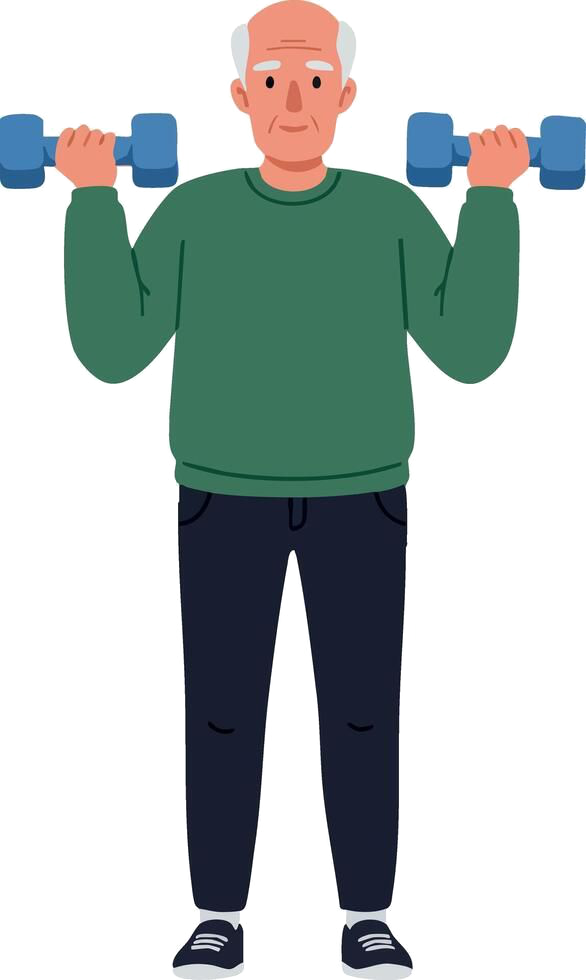
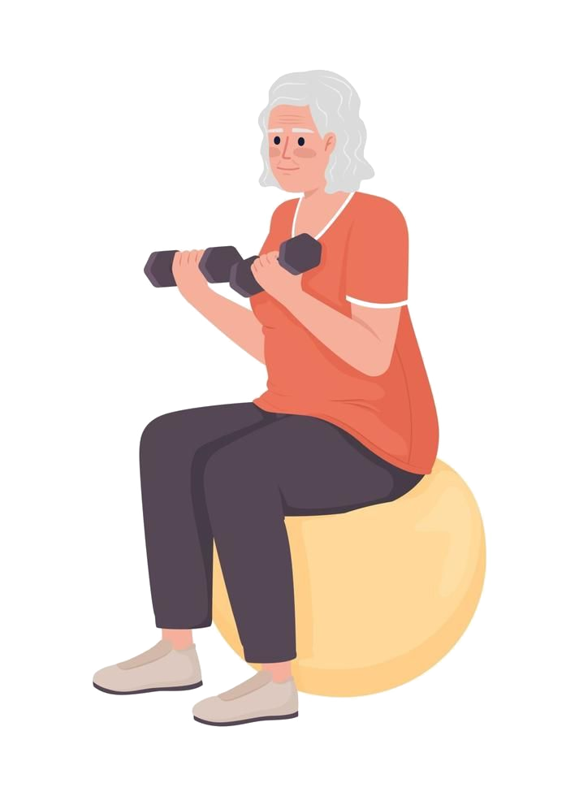
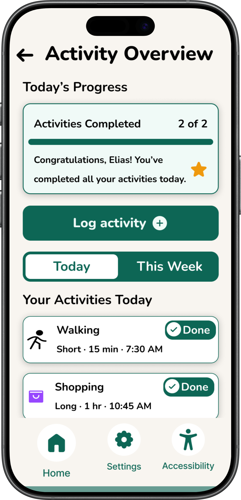
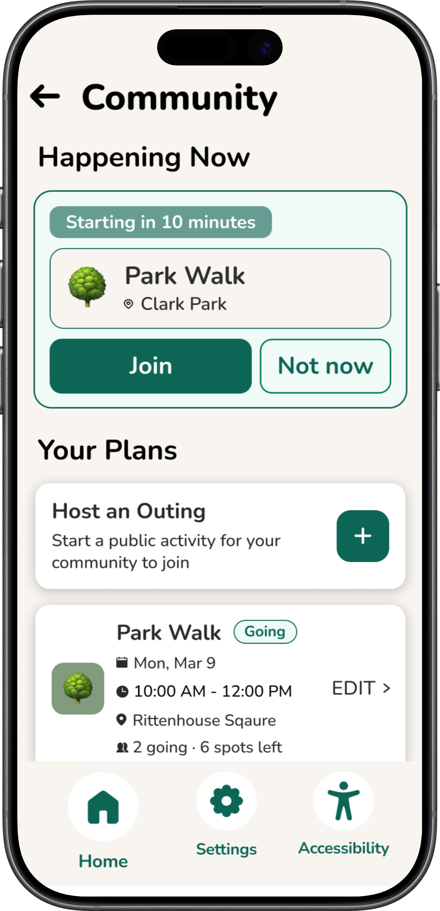

Project Overview
The Problem
Older adults (65+) engaging with mobile health technology face a double burden: age-related physical impairments (like hand tremors and low vision) and low digital literacy. Existing solutions prioritize complex data visualization and fitness culture, which alienates users who see activity as daily living rather than structured exercise.

The Solution
ElderMotion is a mobile app designed specially for senior citizens, with fun activities that fit into everyday life, encouraging goal-setting instead of intimidating targets, shared community activities, and a fully customizable interface — including large text, dark mode, and accessibility-first options.

How I got there
Scroll through to explore the work, or jump to a section above.
Methods
Our user group: older adults (65+) navigating age-related impairments (tremors, low vision) and low digital literacy. Inspired by watching our own grandparents struggle with everyday technology, we grounded our approach in HCI and accessibility literature — researching motor control barriers, mental models, and cognitive health — and refined our focus from a broad "Health & Fitness tracker" into a targeted "Activity Companion" to prevent cognitive overload.
Functional Requirements
Visual & Motor Accessibility
Input tolerance with minimum target size of 2 finger widths; limited gestures with emphasis on single-tap interactions; high-contrast, adjustable text sizes that don't break the screen layout; clear signage with paired text and icons.
Cognitive & Social Accessibility
Simplified flow with a limited number of primary options per screen; reframed mental models using everyday terms instead of technical jargon (e.g., 'Gardening' instead of 'Cardio'); error forgiveness with confirmation states and 'Cancel' options; positive reinforcement; multi-modal support via text-to-speech and voice command accessibility.

Shopping / Gardening activity selection
Community Gardening — join activityKey Findings
By applying DDI principles and WCAG-informed design strategies — such as prioritizing simplified flows, large text, exercise touch targets, and supportive language — we reduced accessibility barriers and increased confidence for users facing visual, cognitive, and motor impairments.
Limitations
Our design primarily represents older adults with lower activity levels and higher accessibility needs, which guided our focus on simplicity and support. As a result, more active older adults who may prefer higher-intensity or more challenging activities were not fully represented. Future work would include a broader range of users to better balance accessibility with flexibility for different activity levels.
Conclusion
Older adults navigating mobile technologies face a significant amount of barriers from age-related impairments and low digital literacy, while existing fitness apps emphasize complex flows, data, and gestures. Our project demonstrates integrating physical activity into the everyday lives of older adults through an inclusive and interactive fitness app that better aligns with their abilities, needs, and mental models.
Information Architecture
After defining functional requirements, I mapped out the app's information architecture to structure navigation around simplicity — minimizing options per screen and prioritizing the most frequently used features.
Bottom Navigation
- Accessibility
- Home button
- Settings
Search bar
Profile name and avatar icon
Cards
- Daily goals
- Your activities
- Measure sugar/blood pressure etc.
- Join friends
- Reports
Prototype
Explore the interactive prototype below.